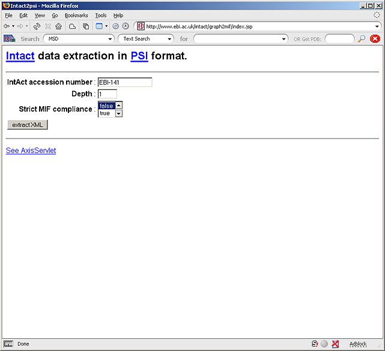
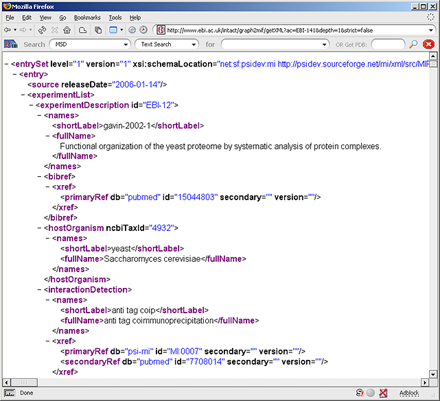
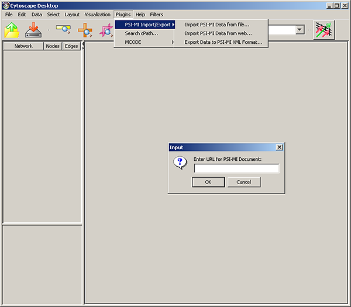
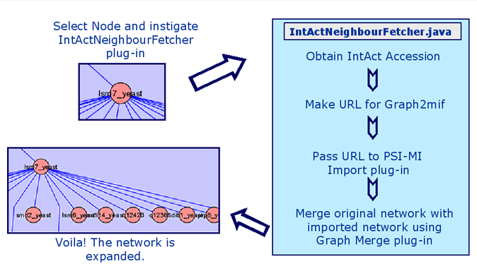

Its Purpose
To enable a user to select a protein and expand the network by fetching its Interactors, from the IntAct database (EMBL-EBI) and adding
them to the network.
About Cytoscape
Cytoscape is a bioinformatics software platform for visualizing molecular interaction networks and integrating these interactions with
gene expression profiles and other state data. It allows customization of network display using powerful visual styles. Furthermore,
plug-ins may be developed using the Cytoscape open Java software architecture by anyone and plug-in community development is encouraged.
Cytoscape was initially made public in July, 2002 (v0.8) and is continually being developed and improved and at the time of writing (11/05)
version 2.2 is offered along with 22 plug-ins.
Cytoscape and IntAct
With Cytoscape proving to be one of the most widely used application for the visulization and analysis of molecular interactions it seemed
an ideal resource for IntAct to exploit. [By default the file format used to import networks is the graph mark-up language (gml),
unfortunately XML is not supported by default, however, a plug-in has been produced with imports and exports XML files.] One of the
ideas for a plug-in was to enable a user to select a protein and expand the network by fetching and displaying its Interactors on the
network. And it is this job which the IntAct-Neighbour-Fetcher plug-in addresses.
The IntAct-Neighbour-Fetcher
The plug-in incorporates the use of three facilities. I shall describe the IntAct-Neighbour-Fetcher plug-in works and what each of
these facilities offers.
IntAct Graph2mif
IntAct's Graph2mif is an application which when given the IntAct accession of a protein produces a PSI-MI XML file of the neighbours
(or Interactors) of that protein. The IntAct accession can be given via the web-page (shown below)

or alternatively can be given in an URL statement such as "http://www.ebi.ac.uk/intact/graph2mif/getXML?ac=EBI-141&depth=1&strict=false" which corresponds to the URL of the output page shown below.

This page can then be saved as a PSI-MI XML file and opened in Cytoscape.
It is this feature that enables the Interactors of a protein to be obtained in a PSI-MI XML format that is of interest for the IntAct-Neighbour-Fetcher plug-in as this can be used by the PSI-MI Import/Export plug-in.
Cytoscape - PSI-MI XML plug-in
The PSI-MI Import/Export Plug-in was developed by Gary Bader and Ethan Cerami at the Sander Group, Computational Biology Center, Memorial Sloan-Kettering Cancer Center, New York City. It enables the import and export of PSI-MI format XML files which are used by many PPI databases. As well as importing PSI-MI XML files from a users local resources (hard-drive, CD-ROM, memory stick) this plug-in also enables files to be imported from an URL. Selecting this import mode opens a window in to which the URL should be typed/copied.

It this URL PSI-MI XML import function that is coupled to the output of the IntAct Graph2mif application which enables to the neighbours of the select protein to be imported. By using the IntAct Graph2mif application to retrieve the Interactors of the selected protein and the URL PSI-MI XML import function we would now have two separate networks; the original and the network of the Interactors of the selected node. In order to grow the original network with the Interactors of the selected node the two networks need to be merged. Hence the next Cytoscape plug-in.vv
Cytoscape - Network Merge
The Graph Merge Plugin is written by one of the Cytoscape developers team, Ryan Kelley at the Ideker Lab, Department of Bioengineering University of California at San Diego (http://www-bioeng.ucsd.edu/faculty/area/ideker_lab/). Once the plug-in is initiated a GUI appears (only if two or more graphs are open) displaying the available networks to be merged. The selected networks are used to make another network named “Merged Network”, leaving the original networks intact.

This plug-in is used to combine the original and imported network of Interactors to form a new network.
IntAct-Neighbour-Fetcher.java
I was fortunate to receive the source code for the PSI-MI Import/Export plug-in and Graph Merge plug-in. IntAct-Neighbour-Fetcher.java was written to combine these various applications. The diagram below shows how it works.

Initially the IntAct accession had to be obtained to be inserted into the URL. It was noticed that this appeared in the Attrbute Browser which can be launched from any protein/node giving its details derived from the PSI-MI XML file. First, an instance of the CyNetworkView is obtained containing the current network. The node attributes are obtained in a HashMap using the getNodeAttributes method (which appears to be depreciated in the Cytoscape API, however, no better method could be found).
From there on it is a matter of passing the right object the right methods to enable the plug-ins to work in the background and by-pass any of the graphical user interfaces employed to give a user options. The plug-ins had to be adapted slightly to enable the methods to return the correct type of object.
Efforts were made to enable the nodes imported to be distinguished by changing their shape and/or colour. Although some progress was made in the second version, the results were not satisfactory as when the nodes were unselected they reverted back to their default shape and colour. This is a potential development for the future.
The source-code is available from SourceForge on the
IntAct project page.
|